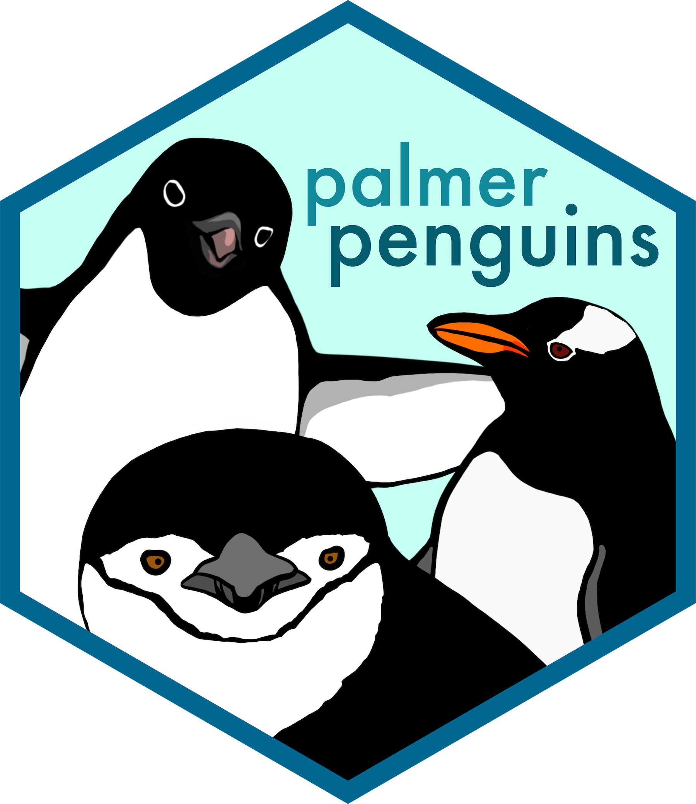

# Install required packages
install.packages(c(
"readr", # Reading CSV files
"dplyr", # Data manipulation
"datawizard" # Data dictionaries
))Example Data & Tools
In this tutorial, we’ll work with real research data to learn data documentation principles. You’ll also get familiar with the key R packages that make data validation and documentation efficient.
Our Example Dataset: Palmer Penguins

We’ll use the Palmer Penguins dataset throughout this tutorial (Gorman et al. 2014) - observations of three penguin species collected from three islands in the Palmer Archipelago, Antarctica. The dataset includes 344 observations of 8 variables:
- Numeric measurements: Bill length, bill depth, flipper length (millimeters), and body mass (grams)
- Categorical data: Species, island, sex, and year
This dataset is perfect for learning because it contains different data types, has some missing values (realistic!), is scientifically meaningful, and is small enough to understand completely.
Two Versions: Clean and Messy
You’ll work with two versions of this data:
-
Clean data (
penguins_clean.csv): High-quality dataset for learning documentation -
Messy data (
penguins_messy.csv): Contains intentional data quality problems for practicing validation
The messy version mirrors real-world issues you’ll encounter: typos in species/island names, inconsistent formatting (e.g., “M” vs “male”), impossible values (negative measurements, placeholder 999), extreme outliers (body mass of 15,000g when max should be ~6,300g), and data entry errors.
NoteHow We Created the Messy Data
We introduced realistic data quality issues across the observations, including:
- Species: Typos like “Adelei”, case errors, extra text like “Gentoo penguin”
- Island: Typos like “Torgerson”, case errors like “biscoe”
- Bill length: Negative values, impossible measurements, placeholder 999
- Bill depth: Negative values, placeholder 99.9
- Flipper length: Zero values
- Body mass: Extreme outliers (15000g, 500g, 10000g)
- Sex: Inconsistent coding (M/F/male/Male/MALE/m/Female)
- Year: Invalid years (2020, 2006, 207, 20009)
These mirror common problems in real research data: data entry mistakes, sensor errors, placeholder values not removed, and transcription errors. The generation script is available on here.
Key R Packages We’ll Use
Throughout this tutorial, you’ll work with three main packages:
- readr: Reading CSV files into R
- dplyr: Data manipulation and exploration
- datawizard: Automates creation of data dictionaries
Installing Required Packages
Install the packages you’ll need:
Download the Datasets
Download both versions of the Palmer Penguins data:
Important: Save both files in a folder called data inside your project directory. If the data folder doesn’t exist yet, create it first.
Create an R Script
Before loading data, create an R script to keep your code organized:
In RStudio: Click File > New File > R Script. Save it as documentation-exercise.R in your project folder.
Without RStudio: Create a file called documentation-exercise.R in your project directory.
You’ll type your code in this script and run it line-by-line (RStudio: Ctrl+Enter / Cmd+Enter, or use the “Run” button). This keeps a record of all your work.
Load and Verify the Data
Now load the clean data and verify it worked:
library(readr) # fast, consistent functions to read CSV/TSV into tibbles
library(dplyr) # tidy, readable verbs for data manipulation (filter, select, mutate, summarize) that we'll use later
# Load the clean penguins data
penguins_clean <- read_csv("data/penguins_clean.csv", show_col_types = FALSE)
# Take a first look
glimpse(penguins_clean)
NoteWhy readr and dplyr Instead of Base R?
While base R has read.csv() and str(), we use readr and dplyr because:
-
read_csv()is more beginner-friendly thanread.csv():- Doesn’t automatically convert text to factors (fewer surprises)
- Better default column type detection
- Shows a clear summary of column types
- Creates tibbles which display more nicely
-
glimpse()is clearer thanstr():- More compact, readable output
- Shows first few values of each column
- Better formatting for wide datasets
These packages are part of the widely-used tidyverse ecosystem, so learning them now will help you in future R work. For this tutorial, we use minimal functions from these packages so you can focus on data validation concepts rather than R syntax.
You should see 344 observations of 8 variables.
Next Steps
You now have your environment set up with the necessary packages and both datasets. In the next section, you’ll learn how to create data dictionaries that document what each variable means and how it should be interpreted.
References
Gorman, Kristen B., Tony D. Williams, and William R. Fraser. 2014. “Ecological Sexual Dimorphism and Environmental Variability Within a Community of Antarctic Penguins (Genus Pygoscelis).” PLOS ONE 9 (3): e90081. https://doi.org/10.1371/journal.pone.0090081.